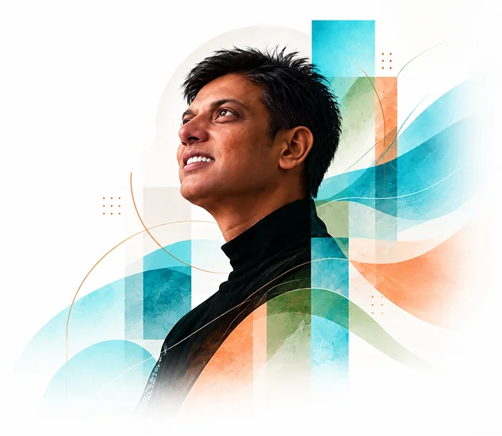
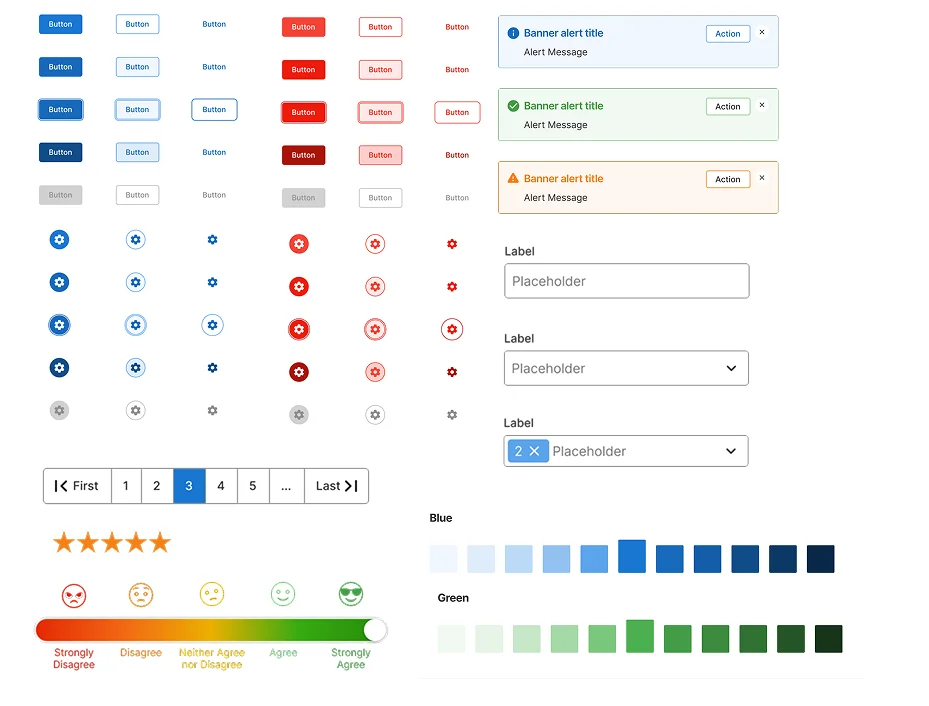
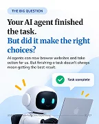
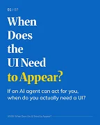
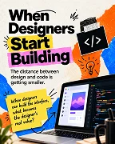

Smart Implementation
AI-assisted implementation experience that simplified onboarding, reduced duplicate client interactions and accelerated module configuration.
View detailsHuman-centered design
Design clear, human-centered digital experiences that make complex products easier to understand and use.
Explore my journey
About
I believe good design makes complexity feel simple.
My approach to UX/UI design goes beyond creating interfaces. It's about understanding people, connecting systems and turning complex problems into experiences that feel clear, intuitive and meaningful.
I bring together human-centred thinking, systems design and a curiosity for emerging technology to create digital experiences that work for people and scale with their needs.
I start by understanding people, their needs and the challenges they face, then connect workflows, information and reusable design systems to create cohesive experiences while exploring how AI and emerging technologies can make products more helpful without compromising user choice or control.
Design connected experiences, not isolated screens. Build consistency, clarity and scalability into every interaction.
Make experiences inclusive, accessible and intuitive by understanding people's needs and the challenges they face.
Question familiar patterns, experiment with emerging technologies and explore better ways for people to interact with digital products.
SELECTED WORK
A selection of product experiences and design systems shaped by complex problems, thoughtful design decisions and a focus on people.
AI-assisted implementation experience that simplified onboarding, reduced duplicate client interactions and accelerated module configuration.
View detailsRedesigned policy configuration workflows using structured information and recommendations to reduce implementation complexity and turnaround time.
View detailsUX strategy and user-centered workflows that supported the platform's growth from a 2-client pilot to 40+ enterprise clients.
View detailsMigration-focused dashboard and navigation redesign tailored to Admin, HR, Manager and Employee experiences.
View detailsDesigned a unified employee workspace for social collaboration, communication, email and calendar access.
View detailsDesigned a reusable project reference experience to help teams estimate resources, effort, timelines and costs.
View detailsDesigned corporate insurance experiences that simplified company onboarding, employee enrollment and claims workflows.
View detailsDesigned responsive government service experiences with accessible UI and reusable front-end components.
View detailsDesigned consistent web and desktop interfaces with reusable components and efficient front-end implementation.
View detailsDesigned container visibility experiences that simplified tracking, movement and journey-status information.
View detailsDesigned oncology drug information experiences for medical representatives across web, tablet and mobile.
View detailsDESIGN SYSTEMS · FIGMA
A Figma-based design system I independently created, bringing together reusable UI components, design foundations and accessibility considerations to support consistent digital experiences.
Buttons, cards, alerts, tabs, accordions, badges, toggles and more.
Colour, typography, spacing and consistent visual rules.
Focus states, contrast and inclusive interaction considerations.
Guidance for using components consistently across designs.

My curiosity about design systems led me to build Forge in Figma to better understand their purpose and how they work. Through this hands-on exploration, I learned that a design system is more than a collection of components. It creates a shared language between design and development, brings consistency to digital experiences and makes complex interfaces easier to build and evolve.
A collection of my thoughts on emerging UX trends, AI-native experiences, design systems and the future of digital interaction.

Exploring how UX can move beyond traditional screens to create more meaningful digital experiences.
View LinkedIn post
Exploring when interfaces should appear when an AI agent can already act on the user's behalf.
View LinkedIn post
Exploring how designers can turn ideas into working experiences with AI-assisted coding while keeping design decisions intentional.
View LinkedIn post